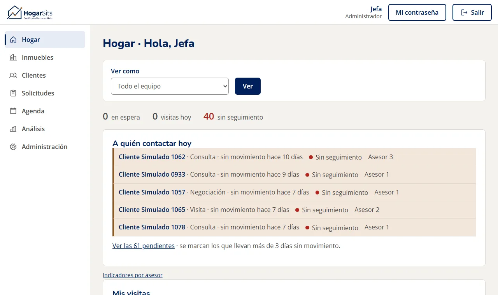
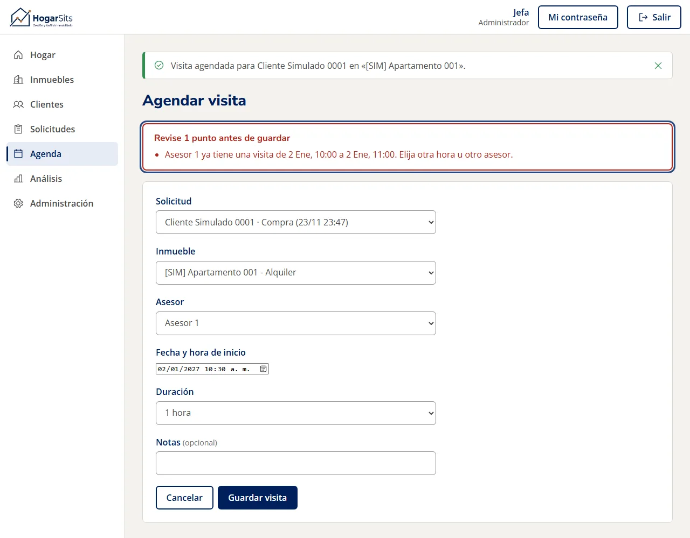
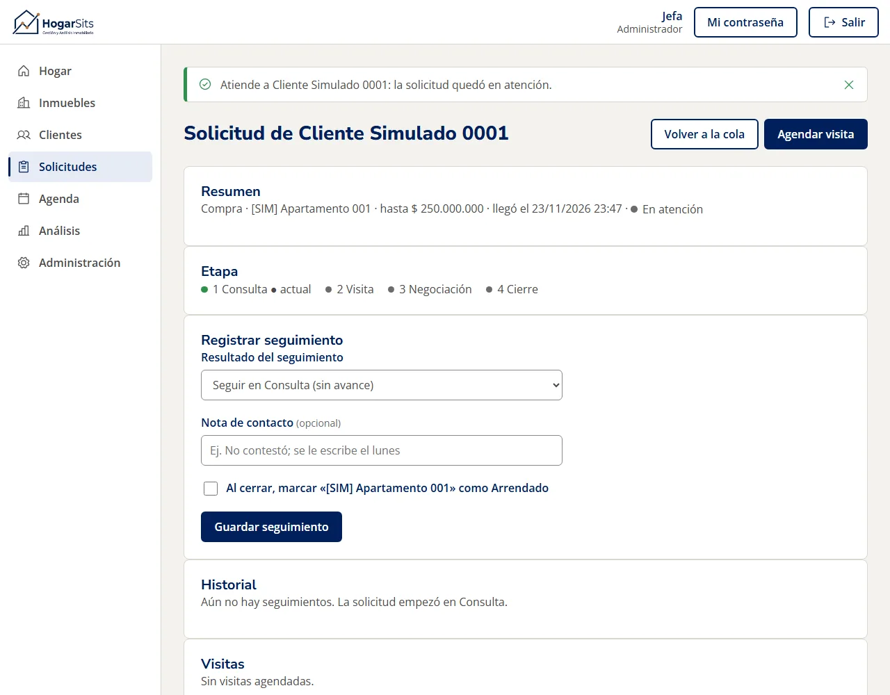

hogarsits.onrender.com/

Quién necesita una llamada hoy
El inicio pone primero a los clientes que llevan más de 3 días sin movimiento, con el asesor responsable. Es la defensa contra la solicitud olvidada.
Procesos Estocásticos · Universidad de Córdoba · 2026
HogarSits ordena el trabajo diario de una inmobiliaria y le dice cuándo llegan los clientes, cuántos asesores necesita y cuántos terminan cerrando.
Abrir el sistema en vivo Ver cómo funciona
Demostración con datos simulados. Si estaba dormida, tarda hasta 1 minuto en despertar.
3 de 3 inmobiliarias de Montería han perdido una solicitud por falta de seguimiento.
Primera ronda de encuestas, n = 3, muestra por conveniencia: son conteos, no porcentajes representativos. Las tres quieren probar un prototipo. La segunda ronda de entrevistas aún no se ha hecho (ver «Límites»).
Dos partes: la gestión del día a día y el análisis de lo que ocurre. Las capturas son de la aplicación real con datos simulados (clientes «Simulado 0145», inmuebles «[SIM]»); no son de ninguna inmobiliaria.

El inicio pone primero a los clientes que llevan más de 3 días sin movimiento, con el asesor responsable. Es la defensa contra la solicitud olvidada.

Si el asesor o el inmueble ya tienen una visita a esa hora, el sistema no guarda y dice con cuál se cruza. La regla vive también en la base de datos, no solo en la pantalla.

Consulta, visita, negociación y cierre, sin saltos ni retrocesos. Seguir en la misma etapa también se registra: de ahí sale el análisis de cierre.

Un asesor en visita deja de estar disponible. Ese número, hora por hora, es el que usa el modelo de colas.
En la encuesta, la analítica fue lo que menos valoraron. Por eso cada cifra llega con una frase y el detalle técnico queda plegado.


Los tres modelos son funciones puras y se verifican contra los ejemplos de la Propuesta y contra un segundo método de cálculo.
| Modelo | Ejemplo de referencia | Resultado | Segunda comprobación |
|---|---|---|---|
| Cola M/M/1 | λ = 2, μ = 3 | ρ = 0,667 · L = 2 · W = 1 h · Lq = 1,333 · Wq = 0,667 h | Cadena de nacimiento y muerte |
| Cola M/M/c | λ = 20 clientes en 12 h, μ = 1 por 45 min | 2 asesores: 28,8 min de espera · 3 asesores: 4,0 min | Cadena de nacimiento y muerte resuelta aparte |
| Cadena de Markov | Matriz P del README | P(cierre desde Consulta) = 22,748 % · 2,3989 pasos | Potencias de la matriz P |
| Poisson | Datos simulados de 120 días, λ = 12 clientes/día | λ estimada 11,99 (error medio 1,7 %); el χ² rechaza 3,8 a 5,5 % con datos que sí son Poisson | Comparación con los parámetros que el simulador conoce |
Un detalle: la Propuesta dice «≈ 22,8 %». El valor exacto es 22,748 %: sale de redondear dos veces (22,748 → 22,75 → 22,8). Las pruebas afirman el valor exacto.
Se corren los mismos servicios del panel sobre datos simulados cuyos parámetros se conocen y se mide el error.
Error de la probabilidad de cierre según los datos disponibles
Los parámetros se estiman bien, pero la espera que predice M/M/c no coincide con la simulada: simulada 9,7 min; el modelo da 0,15, 1,6 o 12,3 según cómo se defina el número de asesores. Acierta la dirección (más asesores, menos espera), no la magnitud, porque las visitas sacan a los asesores de la oficina. El panel lo avisa en pantalla.
main.Es un prototipo académico. Esto es lo que no está demostrado:
Cada punto está documentado en el informe de pruebas del repositorio, con su estado.